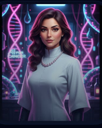
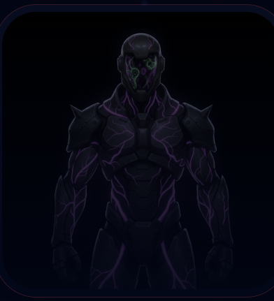

An educational combat game where Knowledge Keepers defeat Misconceptions with real academic knowledge.
Study Saga is a Flask-powered quiz game: players answer syllabus-based multiple-choice questions to defeat enemy "Misconceptions" in turn-based combat. Behind the scenes, a RAG-based hint pipeline generates tiered, pedagogically-designed hints for every question — without ever giving away the answer.
Stuck on a question? Hints unlock progressively, from a challenging analogy down to a vivid, simple clue — scrubbed to never leak the answer.
A detailed, domain-specific analogy that requires real understanding to connect back to the concept.
A concise, mechanism-based summary that narrows things down without stating the answer.
A single, vivid, highly descriptive clue — the last nudge before you're on your own.